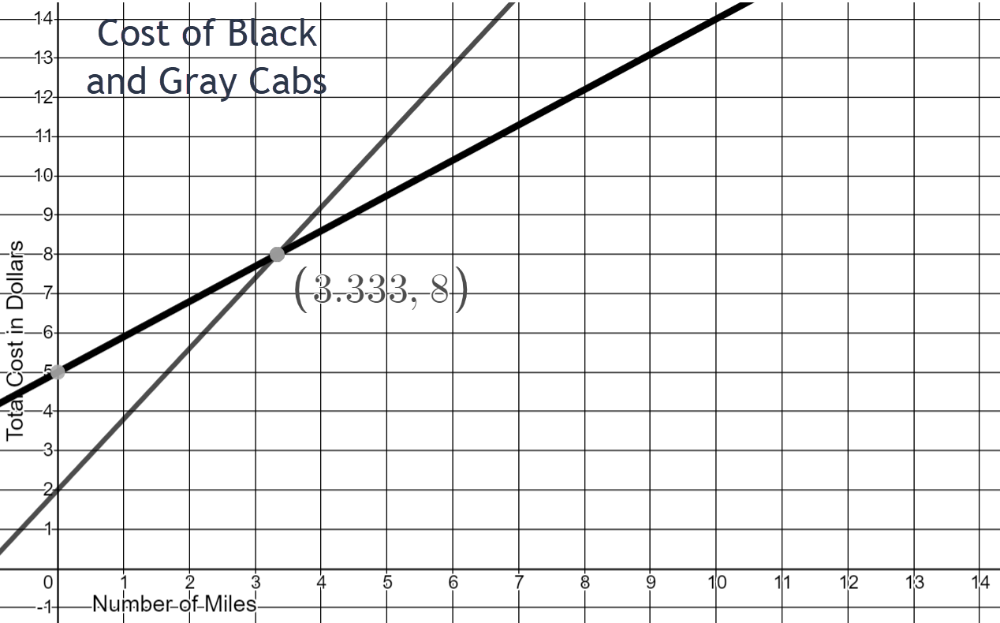

Linear Modeling and Logic Unit
4.3 Writing Equations of Lines
On August 5, 2010, a gold-and-copper mine collapsed in Chile, trapping 33 miners underground. Rescuers used a drilling rig to reach the miners under the earth’s surface. An escape capsule carried each miner up the shaft at a constant rate as shown in the graph.

- At what underground depth were the miners trapped?
- How long has a miner been ascending in the escape capsule when he reaches a depth of 300 feet?
- How long did it take to bring each miner to the surface?
- At what average rate did the escape capsule carry each miner up the shaft?
- Write an expression for the depth of the miner during his rescue with respect to time ascending.
- Use the graph “People With Health Insurance,” which estimates the U.S. population with health insurance in the given years, to answer the following questions.

- How many people had health insurance in 1990?
- How many people had health insurance in 1991?
- At what rate is the number of people with health insurance increasing each year?
- According to the graph, how many people would you expect to have had health insurance in 1988?
- According to the graph, how many people would you expect to have had health insurance in 2014?
- The actual number of people in the U.S. with health insurance in 2014 was about 276 million. Why do you think this differs from your estimate in question (e)?
- Use the graph “Josh’s Car Trip” to answer the following questions.

- Is Josh traveling away from home or towards his home during his trip?
- How many miles long is Josh’s trip?
- How long does Josh’s trip take?
- What is Josh’s speed during his trip?
- At this rate, how long would it take Josh to complete a 3300 miles trek across the United States? If he could only drive 8 hours a day, how many days would it take him?
- Use the graph “Demand Curve” to answer the following questions.
- When the cost of the product is $100, how many units are sold?
- When the cost of the product is $200, how many units are sold?
- When the cost of the product is $300, how many units are sold?
- Is demand increasing or decreasing with respect to cost?
- What is the rate of change for units sold for every dollar increase?
- Which brings in the most money: selling the product for $100, $200, or $300? (Take into account how many units are sold at each price)
- At what cost does the demand hit zero?
- Use the graph “Cost of Cell Phone by Number of Months” to answer the following questions.

- What two variable quantities are shown on the graph?
- Which is the dependent quantity?
- What is the domain as shown on the graph?
- What is the range as shown on the graph?
- What is the initial cost of the cell phone (at month zero)? What might this amount represent?
- What is the cost of the cell phone at 12 months?
- What is the cost of the cell phone at 6 months?
- How much does the person pay towards his cell phone per month?
- Write an equation for the cost of the cell phone based on number of months?
-
Use the graph “Green Cab Vs Blue Cab” to answer the following questions.

- What two variable quantities are shown on the graph?
- What are the units for the dependent quantity?
- If your destination is 10 miles away, which cab would you call?
- If your destination is 2 miles away, which cab would you call?
- At what mileage does cost not matter when choosing a cab?
- How much does the green cab charge per mile?
- Write an equation for the cost of the green cab.
- How much does the blue cab charge per mile?
- Write an equation for the cost of the blue cab.